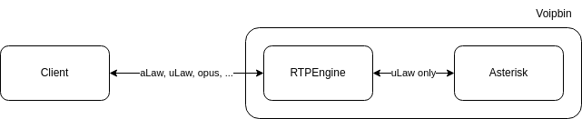
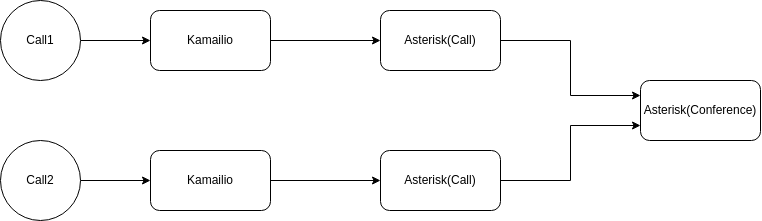
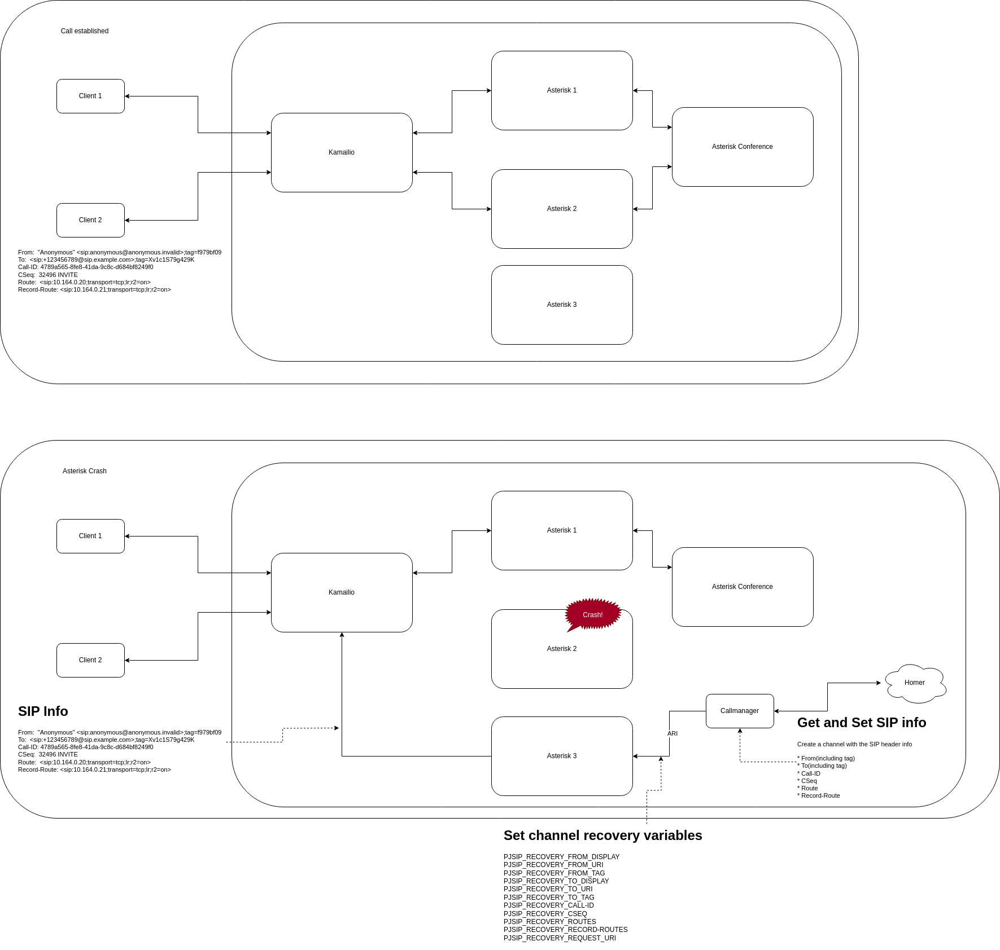

Real-Time Communication (RTC)
Note
AI Context
This page describes VoIPBIN’s real-time communication stack: Kamailio (stateless SIP edge routing), Asterisk (three specialized farms for calls, conferences, and registration), RTPEngine (media proxy and codec transcoding), conference architecture, and SIP session recovery after Asterisk crashes. Relevant when an AI agent needs to understand VoIP call flow mechanics, media handling, codec strategies, or high-availability features.
VoIPBIN’s RTC architecture handles all real-time voice and video communication through a distributed stack of specialized components. The architecture separates signaling (SIP) from media (RTP) processing, enabling independent scaling and fault tolerance.
VoIP Stack Overview
VoIPBIN’s VoIP stack consists of three main components working together:
SIP Traffic Flow:
External Client Internal Services
| |
| SIP (INVITE, etc.) |
v v
+----------+ +----------+ +------------------+
| Load | SIP | Kamailio | SIP | Asterisk |
| Balancer |<------->| Farm |<------->| (Call) |
+----------+ +-----+----+ +--------+---------+
| |
| RTP Control | RTP Control
v |
+----------+ |
| RTPEngine| |
| Farm |<-----------------+
+-----+----+ Media
|
| RTP (Audio/Video)
v
External Client

Key Characteristics:
Stateless SIP Proxies: Kamailio instances maintain no state, enabling dynamic scaling
Distributed Media Processing: RTPEngine handles all media transcoding and routing
Separated Concerns: Signaling (Kamailio) and media (RTPEngine, Asterisk) are independent
Zero-Downtime: Load balancer redirects traffic when instances fail
Horizontal Scaling: Add more instances of any component to handle increased load
Traffic Flow:
SIP Signaling: Load balancer distributes SIP traffic to Kamailio instances
Call Routing: Kamailio routes signaling to appropriate Asterisk instance
Media Setup: RTPEngine handles RTP media streams and transcoding
Call Control: Asterisk manages call state and conference bridges
This modular design ensures VoIPBIN can provide reliable, scalable VoIP services while accommodating high traffic loads.
Kamailio - SIP Edge Router
Kamailio is an open-source SIP server providing the edge routing layer for all SIP traffic.
Official Site: https://www.kamailio.org/
Role in VoIPBIN:
Kamailio acts as the stateless SIP proxy and edge router, responsible for:
SIP Routing: Forwarding SIP messages to appropriate backend services
Load Distribution: Balancing traffic across Asterisk instances
Authentication: Validating SIP registration credentials
Protocol Handling: Managing SIP message parsing and routing
Stateless Operation:
Client Kamailio-1 Kamailio-2 Asterisk
| | | |
| INVITE | | |
+---------------->| | |
| | Forward | |
| +---------------------------------->|
| | | |
| | | |
| 200 OK | | |
|<----------------+-----------------------------------+
| | | |
| ACK | | |
+---------------------------------->| |
| | | Forward |
| | +---------------->|
| | | |
Note: Different Kamailio instances handle different messages
in the same call (stateless operation)
Key Features:
Load Balancing: Distributes incoming SIP traffic across multiple instances
Stateless Operation: No state maintained, enabling dynamic scaling and failover
High Availability: Instances can be added or removed without affecting ongoing calls
Fast Performance: C-based implementation with minimal overhead
Stateless Benefits:
In the diagram above, Kamailio receives initial SIP traffic from the client and forwards it to Asterisk. However, subsequent SIP messages in the same call may go to different Kamailio instances. This stateless design allows for:
Instant failover without session loss
Dynamic scaling without coordination
Simplified operations and deployment
Asterisk - Media and Call Processing
Asterisk is an open-source communications platform providing comprehensive telephony services.

VoIPBIN’s Three Asterisk Farms:
VoIPBIN employs three specialized Asterisk farms for optimized scalability and fault isolation:
Asterisk Farm Architecture:
+---------------------------------------------------------+
| Kamailio Farm |
+------+-------------------------------------+------------+
| |
| All Calls | Registrations
v Conferences v
+-------------+ +-------------+ +-------------+
| Asterisk | | Asterisk | | Asterisk |
| Call | | Conference | | Registrar |
| Farm | | Farm | | Farm |
| |--->| | | |
| o 1:1 calls | | o N-way | | o SIP |
| o Call | | conference| | REGISTER |
| bridging | | o Mixing | | o Auth |
| o Transfers | | o Recording | | o Presence |
+-------------+ +-------------+ +-------------+
1. Asterisk-Call Farm
Handles 1:1 call processing:
Call setup and teardown
Media bridging between two parties
Call transfers and forwarding
DTMF processing
Call recording
2. Asterisk-Conference Farm
Manages multi-party conference calls:
Conference bridge creation and management
Participant mixing (up to hundreds of participants)
Conference recording
Participant management (mute, kick, etc.)
Audio/video conferencing
3. Asterisk-Registrar Farm
Handles SIP registration:
User authentication
Registration lifecycle management
Presence information
Contact database
Farm Benefits:
Independent Scaling: Scale each farm based on specific load patterns
Fault Isolation: Issues in one farm don’t affect others
Optimized Configuration: Each farm can be tuned for its specific workload
Targeted Upgrades: Update farms independently without full system downtime
Inter-Farm Communication:
While farms operate independently, Asterisk-Call and Asterisk-Conference communicate when bridging calls into conference sessions, enabling seamless transitions from 1:1 calls to conferences.
RTPEngine - Media Proxy and Transcoding
RTPEngine is an open-source media proxy providing RTP processing and transcoding capabilities.
Role in VoIPBIN:
RTPEngine serves as the codec edge server and media proxy:
Codec Transcoding:
External Client VoIPBIN Internal
(Various Codecs) (ulaw only)
| |
| RTP (G.722, Opus, etc.) |
v v
+---------------------------------------------+
| RTPEngine Farm |
| |
| o Transcode external -> ulaw (internal) |
| o Transcode ulaw (internal) -> external |
| o NAT traversal |
| o Packet switching |
| o SRTP/RTP conversion |
+------------------+--------------------------+
|
| RTP (ulaw)
v
Asterisk Farm
Responsibilities:
Codec Transcoding: Convert between external codecs and internal ulaw
NAT Traversal: Handle media through NAT and firewalls
SRTP Support: Encrypt/decrypt media streams
Packet Routing: Efficient RTP packet switching
Load Distribution: Distribute media processing across instances
Internal Codec Strategy:
Internal: VoIPBIN uses ulaw codec exclusively for all internal communication
External: Clients can use any supported codec (G.711, G.722, Opus, etc.)
Edge Transcoding: RTPEngine performs all transcoding at the edge
Performance: Internal ulaw ensures minimal CPU overhead for media processing
This edge transcoding strategy ensures optimal internal performance while supporting diverse client codecs.
Conference Architecture
VoIPBIN’s conference functionality is powered by the dedicated Asterisk-Conference farm.
Conference Design:
VoIPBIN leverages a dedicated Asterisk-Conference component for all conference calls:
Advantages:
Isolation and Scalability: Conference processing separated from regular calls ensures stable service
Independent Scaling: Conference farm scales based on conferencing usage patterns
Centralized Management: All conference operations managed in one place
Fault Isolation: Conference issues don’t impact regular call processing
Conference Flow
Conference Lifecycle:
Flow Manager Asterisk-Conf Conference Bridge
| | |
| 1. Create Conf | |
+----------------->| |
| | 2. Create Bridge |
| +------------------->|
| | |
| 3. Add Part. 1 | |
+----------------->| 4. Join Bridge |
| +------------------->|
| | |
| 5. Add Part. 2 | |
+----------------->| 6. Join Bridge |
| +------------------->|
| | |
| | [Audio Mixing] |
| |<------------------>|
| | |
| 7. End Conf | |
+----------------->| 8. Destroy Bridge |
| +------------------->|
| | |
Conference Steps:
Call Initiation: Flow Manager requests conference creation (via “connect” or “conference_join” action)
Conference Establishment: Asterisk-Conference creates dedicated bridge for participants
Participant Joining: Participants added to bridge sequentially or simultaneously
Conference Interaction: Participants communicate with voice/video, screen sharing, etc.
Conference Termination: Bridge destroyed when conference ends or all participants leave
Conference Features:
Audio and video mixing
Recording capabilities
Dynamic participant management
Mute/unmute controls
Moderator capabilities
Entry/exit tones
1:1 Calls as Conferences
VoIPBIN treats 1:1 calls as special cases of conferencing with only two participants:
1:1 Call = Conference with 2 Participants
+--------------+ +--------------+
| Participant A| | Participant B|
+------+-------+ +------+-------+
| |
| Conference Bridge |
| (2 participants) |
+-----------+------------+
|
Asterisk-Call
(manages bridge)
Benefits of Unified Approach:
Simplified Development: Same infrastructure for 1:1 calls and conferences
Enhanced Flexibility: Seamless transitions from 1:1 to multi-party conferences
Improved Resource Utilization: Optimized resource allocation across all call types
Consistent Features: Same feature set available for all call types
Easier Maintenance: Single codebase for all call scenarios
Example Transition:
1:1 Call -> Multi-Party Conference:
Initial State: Add 3rd Party: Result:
+-----+ +-----+ +-----+ +-----+ +-----+ +-----+
| A |--| B | | A |--| B | | A |--| B |
+-----+ +-----+ +-----+ +-----+ +-----+ +-----+
| |
| |
v v
+-----+ +-----+
| C | | C |
+-----+ +-----+
2-participant bridge Add participant 3-participant bridge
(1:1 call) without disruption (conference)
SIP Session Recovery
VoIPBIN provides SIP session recovery to maintain active SIP sessions even when an Asterisk instance crashes unexpectedly. This feature prevents call drops, conference exits, and media failures by making the client perceive the session as uninterrupted.
How It Works
When an Asterisk instance crashes, all SIP sessions managed by that instance disappear immediately. Without a BYE message, clients experience unexpected termination. VoIPBIN recovers sessions through an automated process:
Session Recovery Flow:
Asterisk-1 Client Sentinel Call-manager HOMER DB Asterisk-2
| | | | | |
| Active | | | | |
| Session | | | | |
|<----------->| | | | |
| | | | | |
X CRASH | | | | |
| | | | |
| Detect Crash | | |
| | | | |
| Publish Crash event | | |
| +------------->| | |
| Query Sessions | |
| Get SIP Headers | |
| |<--------+ |
| | |
| Create Channels |
| +--------------------->|
| |
| |
| |
| Send Recovery INVITE |
|<--------------------------------------------------+
| |
| 200 OK (same Call-ID) |
+-------------------------------------------------->|
| |
Session | |
Recovered | |
|<------------------------------------------------->|
Detailed Steps
1. Crash Detection
The sentinel-manager quickly detects abnormal termination of an Asterisk instance.
2. Session Lookup
The internal database is queried to retrieve all active sessions from the failed instance.
3. SIP Field Collection (via HOMER)
The HOMER SIP capture API provides SIP header information:
Call-ID
From/To headers and tags
Route headers
CSeq values
Other SIP state information
4. Create SIP Channels on Another Asterisk
A healthy Asterisk instance is selected and new SIP channels are created with original session information.
5. Set Recovery Channel Variables
Channel variables are set to ensure the new INVITE appears as continuation:
PJSIP_RECOVERY_FROM_DISPLAY
PJSIP_RECOVERY_FROM_URI
PJSIP_RECOVERY_FROM_TAG
PJSIP_RECOVERY_TO_DISPLAY
PJSIP_RECOVERY_TO_URI
PJSIP_RECOVERY_TO_TAG
Call-ID, CSeq, Routes (preserved from original session)
6. Send Recovery INVITE
The INVITE reuses the original Call-ID and tags, so the client interprets it as a re-INVITE within the existing session.
7. Restore RTP and SIP Sessions
Signaling and media are fully re-established, restoring the call to its previous state.
8. Resume Flow Execution
The recovered session resumes Flow execution from before the crash:
Active Calls: Conversation continues without interruption
Conferences: User reconnected to same conference bridge
Call State: All call variables and state restored
Asterisk Patch for Recovery
VoIPBIN patches Asterisk’s PJSIP stack to override SIP header fields based on channel variables:
Patch Implementation:
This patch allows a newly created SIP channel to impersonate the original one, making the recovery INVITE appear as a legitimate continuation:
// Extract recovery variables from channel
val_from_display_c_str = pbx_builtin_getvar_helper(session->channel, "PJSIP_RECOVERY_FROM_DISPLAY");
val_from_uri_c_str = pbx_builtin_getvar_helper(session->channel, "PJSIP_RECOVERY_FROM_URI");
val_from_tag_c_str = pbx_builtin_getvar_helper(session->channel, "PJSIP_RECOVERY_FROM_TAG");
val_to_display_c_str = pbx_builtin_getvar_helper(session->channel, "PJSIP_RECOVERY_TO_DISPLAY");
val_to_uri_c_str = pbx_builtin_getvar_helper(session->channel, "PJSIP_RECOVERY_TO_URI");
val_to_tag_c_str = pbx_builtin_getvar_helper(session->channel, "PJSIP_RECOVERY_TO_TAG");
// Call-ID, CSeq, Routes, and other headers are handled similarly
// Override PJSIP headers with recovery values
Full Patch:
The complete implementation is available on GitHub:
Recovery Guarantees:
Transparent to Client: Client sees normal re-INVITE, no indication of crash
State Preservation: All call state and variables restored
Media Continuity: Audio/video streams resume without gaps
Flow Continuity: Call flow resumes at exact point before crash